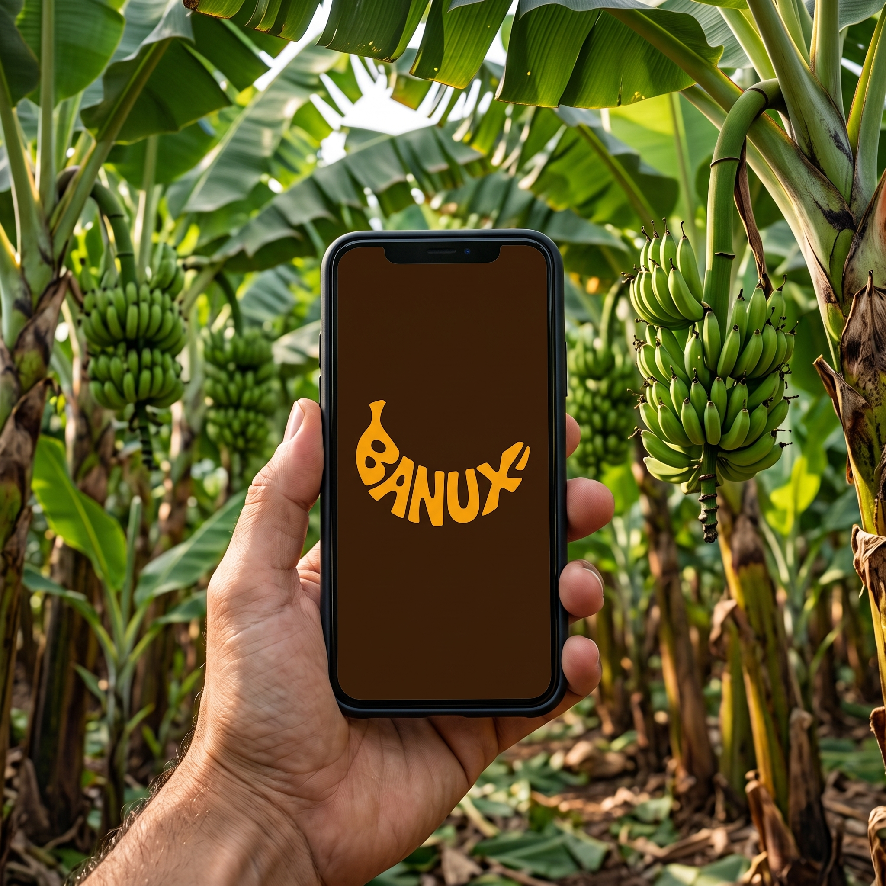
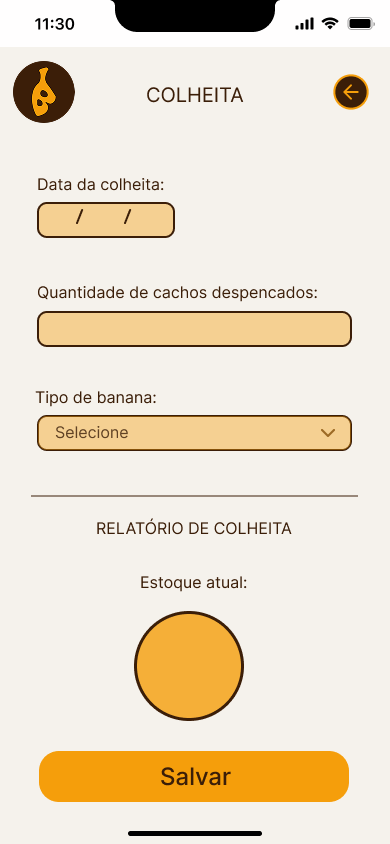
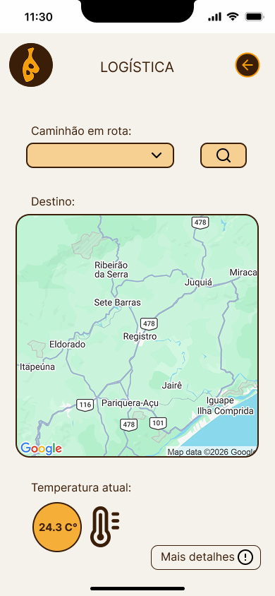
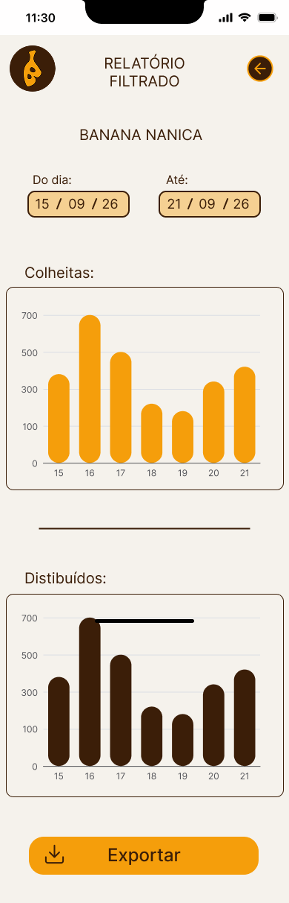

Sensores Inteligentes
Sensores acompanham temperatura, umidade e outras condições importantes da carga.
O Banux monitora temperatura, umidade e outras informações da carga em tempo real. Com sensores inteligentes e computação em nuvem, produtores e transportadores podem agir rapidamente para reduzir perdas e garantir mais qualidade na entrega.

Da coleta dos dados à entrega, a plataforma ajuda você a acompanhar as condições da carga.
Sensores acompanham temperatura, umidade e outras condições importantes da carga.
Os dados são enviados e organizados na nuvem para que você consulte as informações com facilidade.
Acompanhe as condições do transporte e identifique rapidamente quando algo precisar de atenção.
Informações essenciais para acompanhar a qualidade da banana durante todo o transporte.
Monitora a temperatura da carga para preservar a qualidade da banana.
Acompanha a umidade durante todo o transporte para reduzir perdas.
Controla a concentração de etileno para evitar o amadurecimento precoce.
Permite acompanhar onde a carga está durante todo o percurso.
Exibe informações importantes sobre o transporte e o trajeto.
Armazena todas as informações para consulta em tempo real.
Acompanhe como a plataforma auxilia no monitoramento e na gestão do transporte da banana por meio de uma interface simples e intuitiva.

A tela inicial reúne atalhos para as áreas de colheita, transporte, logística e relatórios. Assim, a equipe acessa rapidamente as principais funções do Banux e encontra os caminhos para acompanhar a operação.
Registre a data, a quantidade de cachos e o tipo de banana colhido. Esses dados ajudam a manter o estoque atualizado e organizam as informações da produção desde a colheita.


Localize o caminhão no mapa e confira o destino da carga. A tela também apresenta a temperatura atual, facilitando o acompanhamento das condições durante o percurso.
Filtre os dados por período e tipo de banana para consultar colheitas e produtos distribuídos. Os gráficos organizam esses registros e ajudam a comparar os resultados da operação.

Assista ao pitch desenvolvido pela equipe e conheça a proposta completa do projeto.
Uma solução desenvolvida para tornar a logística da banana mais inteligente, organizada e sustentável.
Centraliza todas as informações da carga em um único ambiente para facilitar o acompanhamento.
Permite acesso às informações em tempo real de qualquer dispositivo conectado.
Solução desenvolvida especificamente para atender às necessidades da logística da banana.
Sistema intuitivo que facilita o uso por produtores, transportadores e gestores.
Auxilia na redução de desperdícios e incentiva um transporte mais eficiente e consciente.
Gostou da proposta do Banux? Entre em contato com a equipe responsável pelo projeto.